Asset manifest
Photo credits
31 stock photographs are from Unsplash (free commercial use; attribution not required but given here). We generated no AI imagery. These photos are presentation stand-ins and do not depict actual Jokerz products, staff or locations. The Jokerz logo is vector artwork taken directly from the official guideline. Full details: ASSET-MANIFEST.md in the project root and assets/manifest.json.
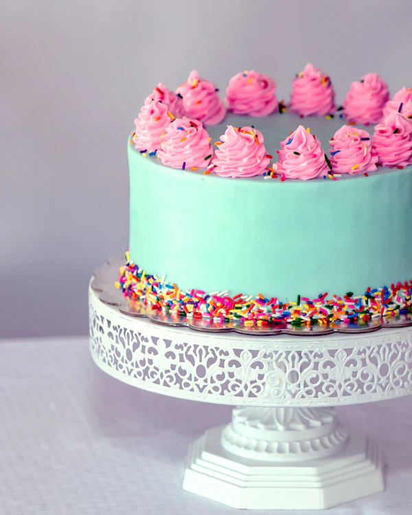
hero-signature-cakeHero, main imagePhoto by David Holifield on Unsplash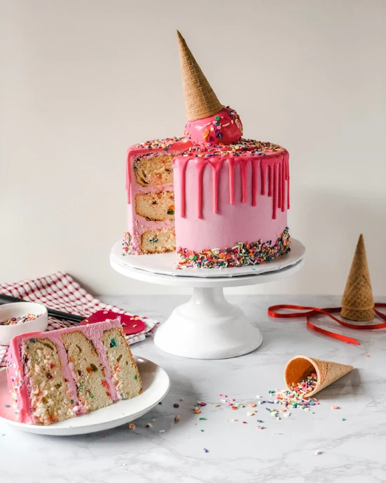
pink-drip-celebration-cakeCelebrations featurePhoto by Katie Rosario on Unsplash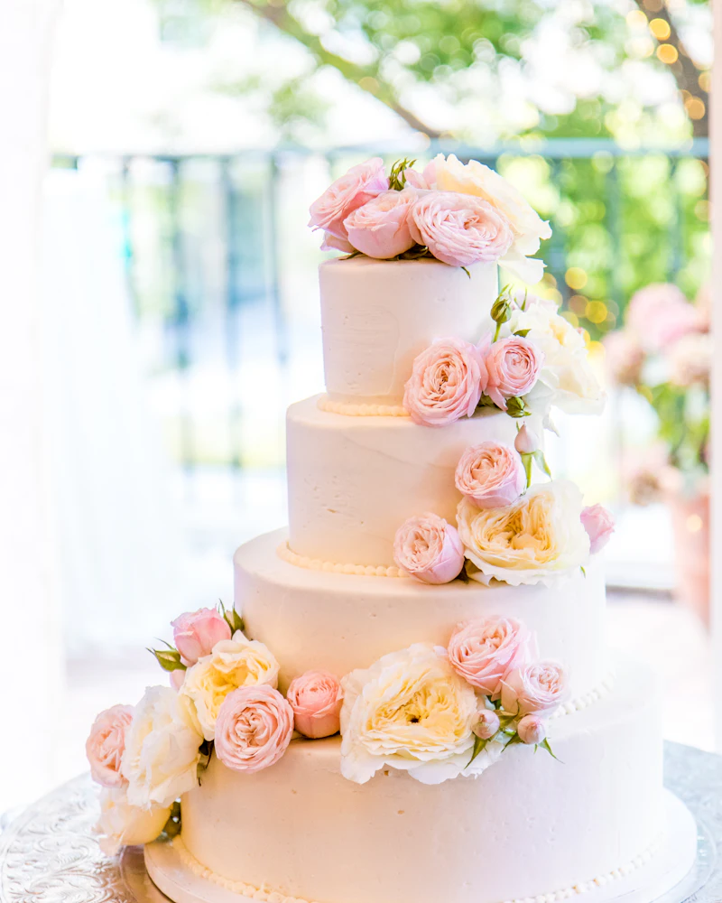
four-tier-rose-cakeHomepage celebrate chapter - full-screen zoom-out heroPhoto by Jason Leung on Unsplash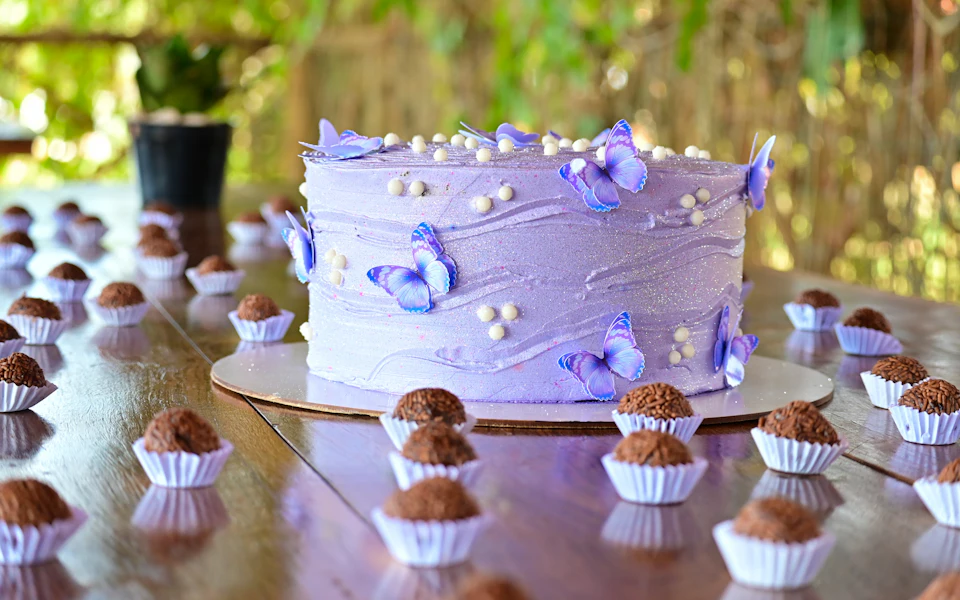
lavender-butterfly-cakeHomepage celebrate chapter - full-screen zoom-out heroPhoto by Fernando Dantas on Unsplash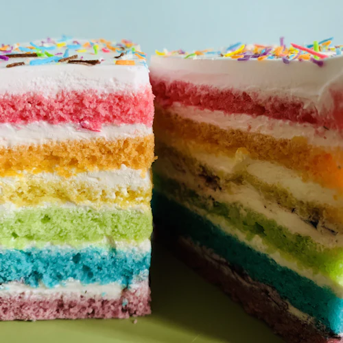
rainbow-layer-cakeMenu card - cakesPhoto by Anirban Sengupta on Unsplash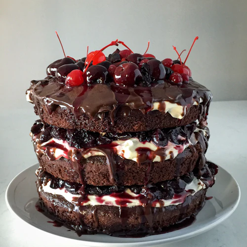
chocolate-cherry-layer-cakeMenu card - cakesPhoto by Jacob Thomas on Unsplash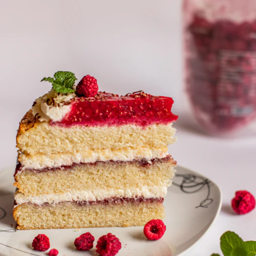
strawberry-cream-cakeMenu card - cakesPhoto by Aneta Voborilova on Unsplash- floral-birthday-cakeCelebrations featurePhoto by Nataliya Melnychuk on Unsplash
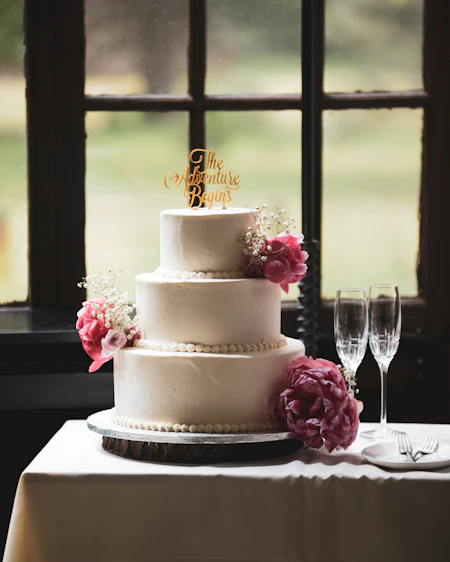
three-tier-floral-cakeCelebrations featurePhoto by Frank Zhang on Unsplash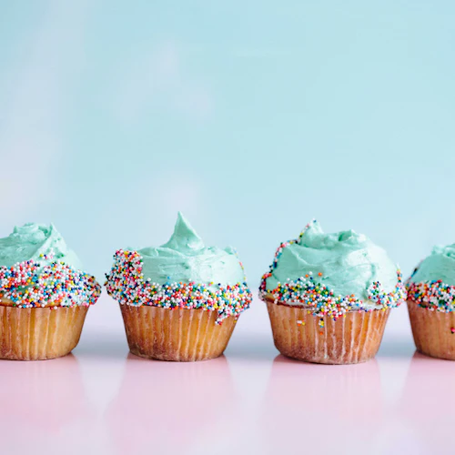
teal-cupcakesMenu card - sweetsPhoto by Brooke Lark on Unsplash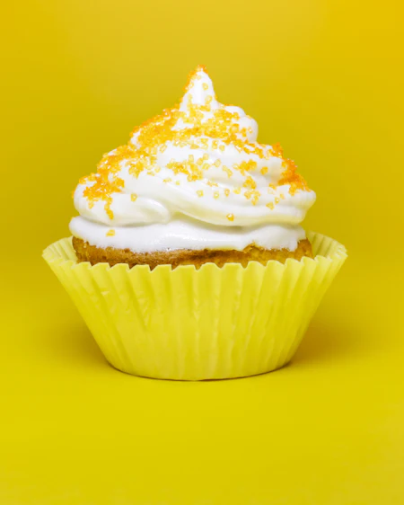
lemon-cupcakeBoba / colour story accentPhoto by Cristina Matos-Albers on Unsplash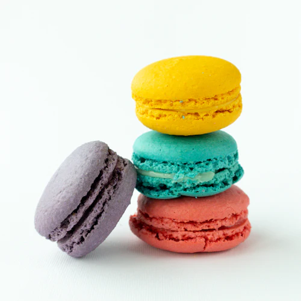
pastel-macaronsMenu card - sweetsPhoto by Divani on Unsplash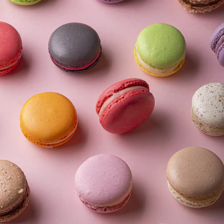
macarons-on-blushHero floating cardPhoto by Serghey Savchuk on Unsplash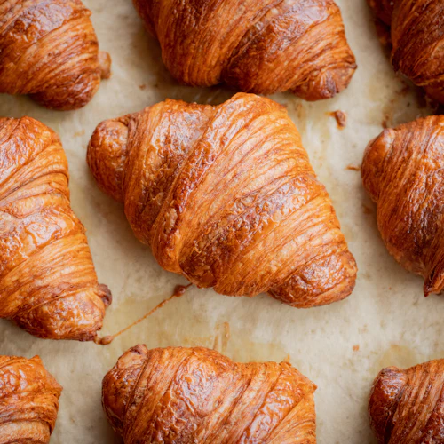
artisan-croissantsMenu card - pastriesPhoto by Conor Brown on Unsplash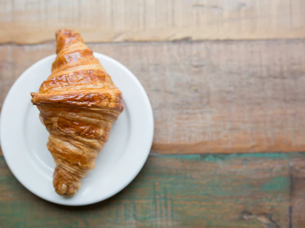
croissant-on-plateThree counters - bakeryPhoto by Kaley Dykstra on Unsplash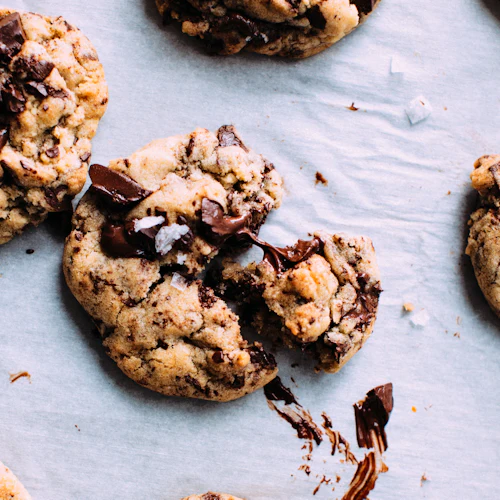
chocolate-chip-cookiesMenu card - sweetsPhoto by Jennifer Pallian on Unsplash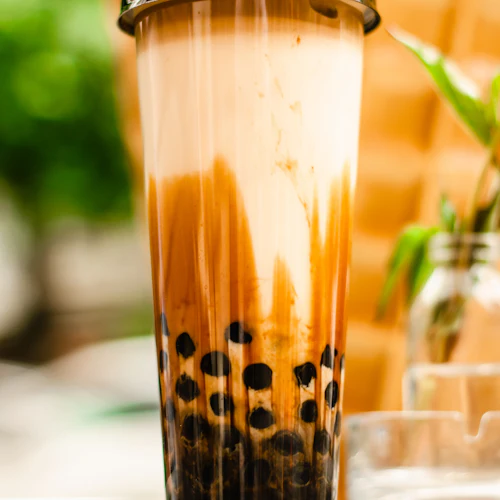
brown-sugar-bobaMenu card - boba; hero floating cardPhoto by Orimi Protograph on Unsplash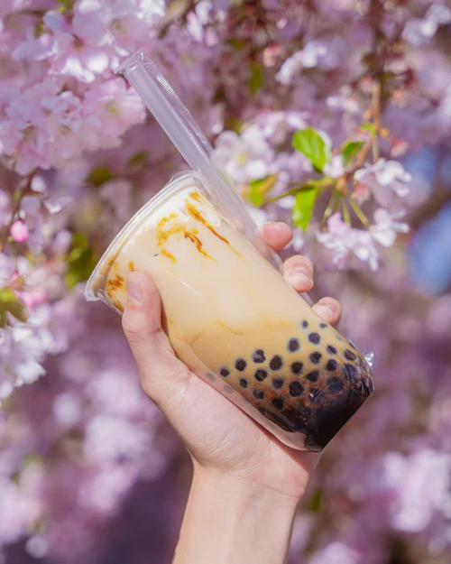
boba-in-bloomBoba bar featurePhoto by Malcolm Broström on Unsplash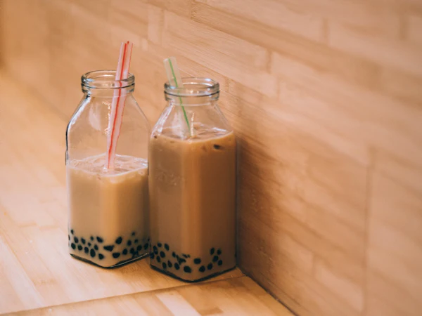
milk-tea-jarsThree counters - bobaPhoto by Rosalind Chang on Unsplash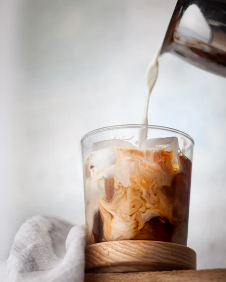
iced-latte-pourBoba bar feature secondaryPhoto by Empreinte on Unsplash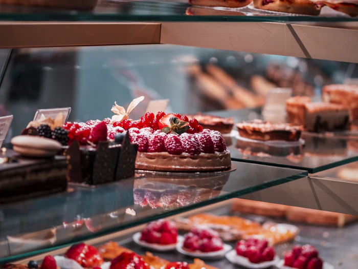
pastry-display-tartsCafe atmosphere galleryPhoto by Ulysse Pointcheval on Unsplash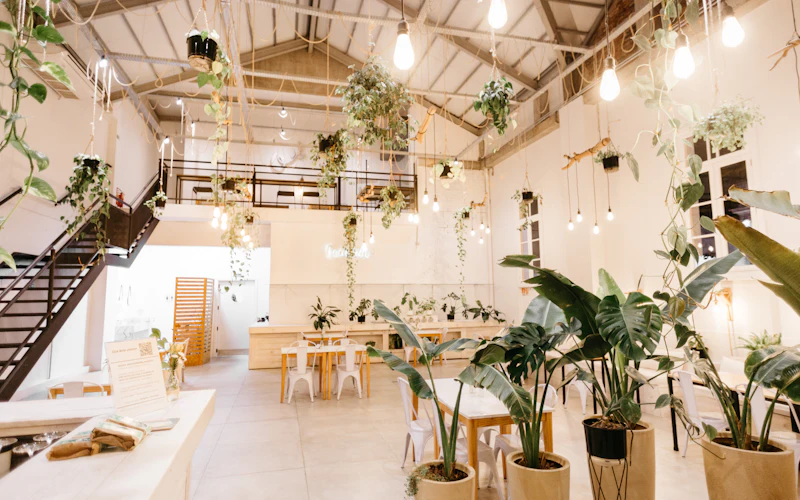
modern-cafe-interiorCafe atmosphere leadPhoto by Jonathan Borba on Unsplash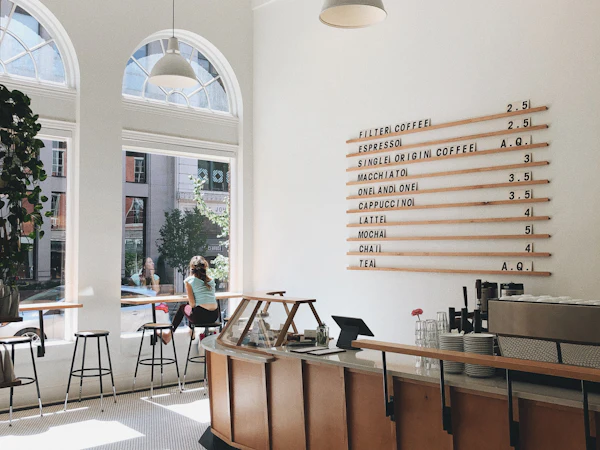
cafe-counter-brightThree counters - cafePhoto by Keghan Crossland on Unsplash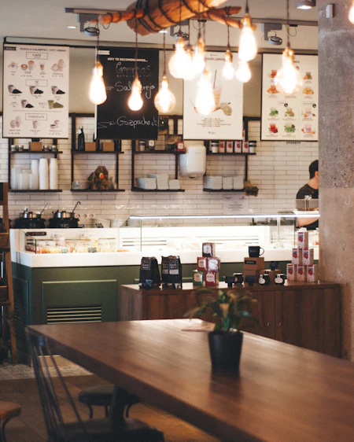
cafe-warm-lightsCafe atmosphere galleryPhoto by Clifford on Unsplash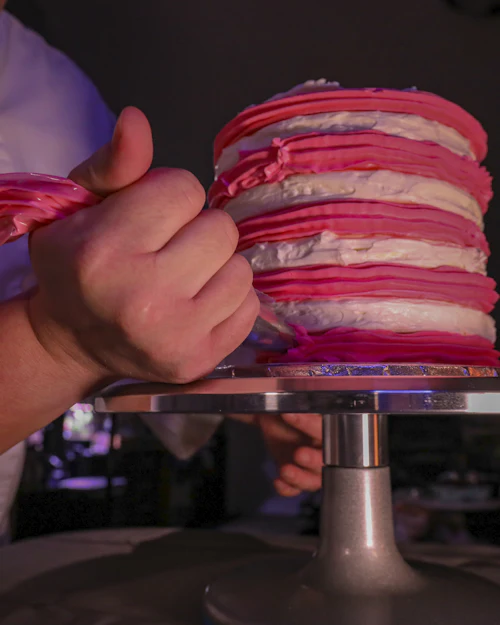
cake-decoration-processCraft story leadPhoto by Mick Haupt on Unsplash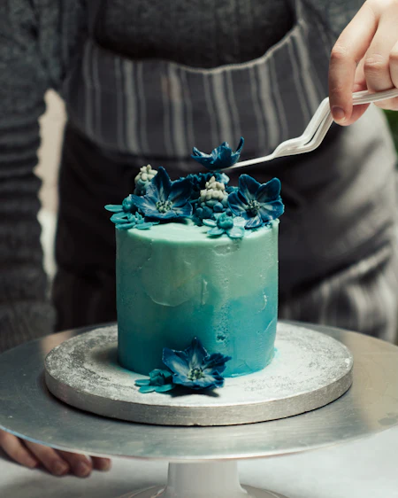
teal-cake-finishingCraft storyPhoto by Holly Stratton on Unsplash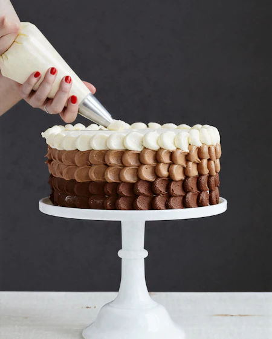
piping-buttercreamCraft storyPhoto by American Heritage Chocolate on Unsplash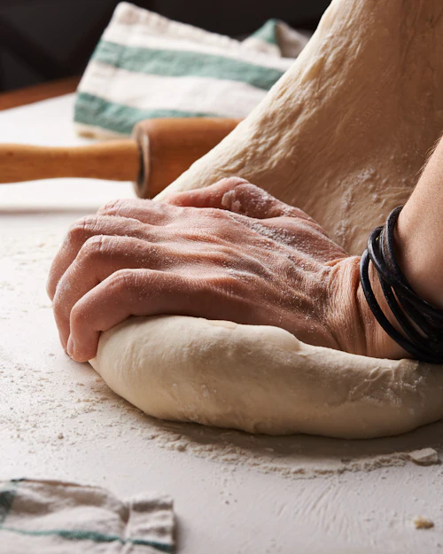
pastry-dough-prepCraft storyPhoto by Nadya Spetnitskaya on Unsplash- birthday-candlesCelebrations / order stepsPhoto by Aneta Pawlik on Unsplash
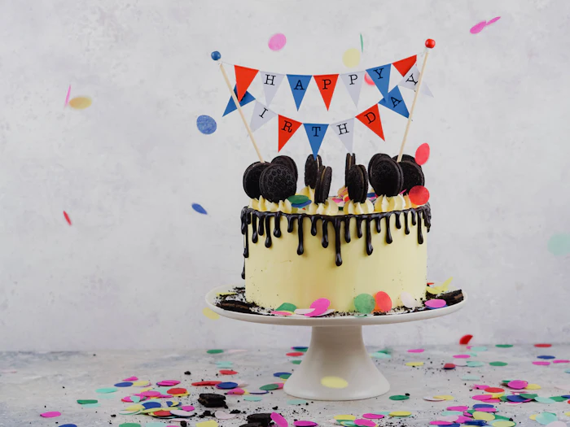
party-tableFinal call to actionPhoto by Toa Heftiba on Unsplash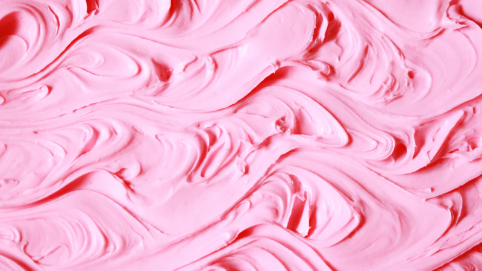
pink-frosting-textureDecorative texture bandPhoto by Alexander Grey on Unsplash
Client-supplied images
34 product, boba, ice-cream, crepe and catering images taken from jokerzbakery.com at the client's request. We have not verified their original sources. One live-site image (Honey cake) was excluded because it carries a Vecteezy watermark.
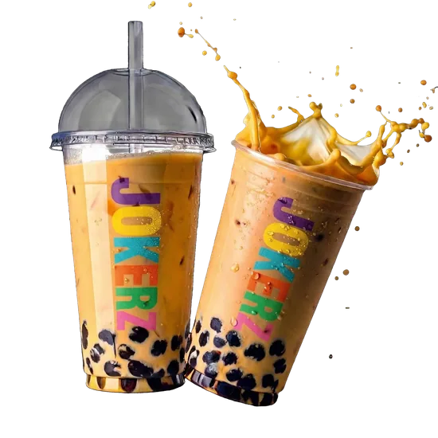
boba-jokerz-cupsHero sticker, boba chapter leadSource: jokerzbakery.com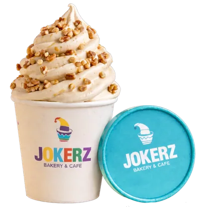
soft-serve-jokerzHero sticker, scoops rowSource: jokerzbakery.com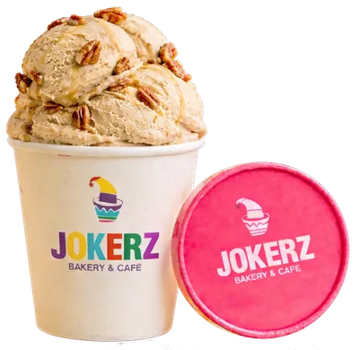
hard-scoop-jokerzScoops rowSource: jokerzbakery.com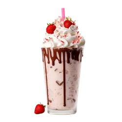
sundaeScoops rowSource: jokerzbakery.com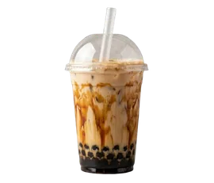
classic-milk-teaBoba chapterSource: jokerzbakery.com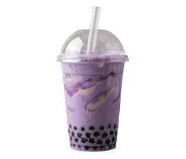
taro-milk-teaBoba chapterSource: jokerzbakery.com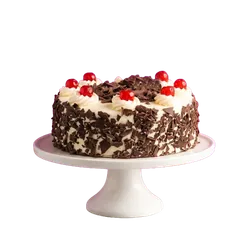
black-forest-cakeSignature cakesSource: jokerzbakery.com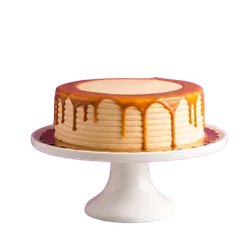
butterscotch-cakeSignature cakesSource: jokerzbakery.com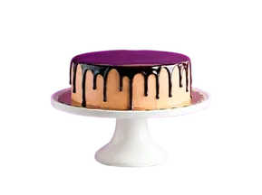
chocolate-mousse-cakeSignature cakesSource: jokerzbakery.com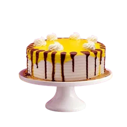
pineapple-cakeSignature cakesSource: jokerzbakery.com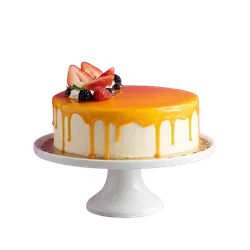
mango-cakeSignature cakesSource: jokerzbakery.com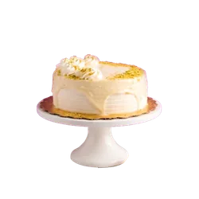
rasamalai-cakeSignature cakesSource: jokerzbakery.com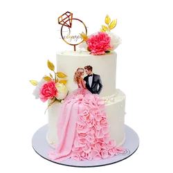
custom-cakeCelebrate chapterSource: jokerzbakery.com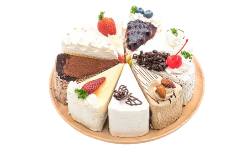
assorted-cake-slicesCelebrate chapterSource: jokerzbakery.com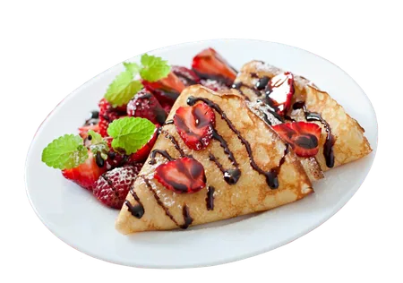
strawberry-crepeCrepes rowSource: jokerzbakery.com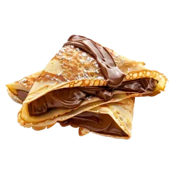
nutella-crepeCrepes rowSource: jokerzbakery.com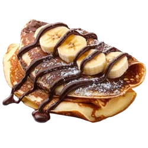
banana-chocolate-crepeCrepes rowSource: jokerzbakery.com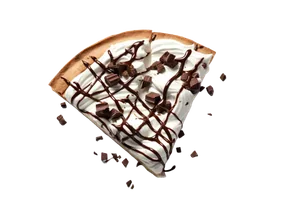
oreo-crumble-crepeCrepes rowSource: jokerzbakery.com- cafe-latteDawn chapterSource: jokerzbakery.com
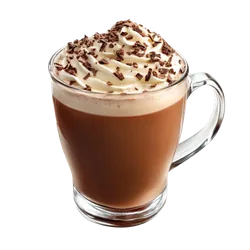
mochaDawn chapterSource: jokerzbakery.com- espressoDawn chapterSource: jokerzbakery.com
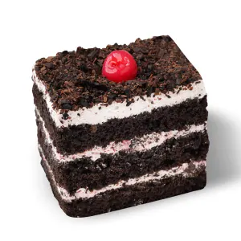
black-forest-pastryPastry counterSource: jokerzbakery.com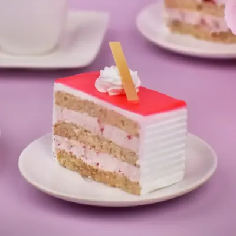
strawberry-pastryPastry counterSource: jokerzbakery.com- butterscotch-pastryPastry counterSource: jokerzbakery.com
- pineapple-pastryPastry counterSource: jokerzbakery.com
- mango-pastryPastry counterSource: jokerzbakery.com
- vanilla-pastryPastry counterSource: jokerzbakery.com
- catering-weddingCelebrate gridSource: jokerzbakery.com
- catering-corporateCelebrate gridSource: jokerzbakery.com
- catering-birthdayCelebrate gridSource: jokerzbakery.com
- catering-communityCelebrate gridSource: jokerzbakery.com
- dessert-tableCelebrate gridSource: jokerzbakery.com
- dessert-cupsCelebrate gridSource: jokerzbakery.com
- dessert-cupcakesCelebrate gridSource: jokerzbakery.com